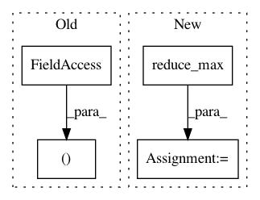

509453992838a524f6442d4e0f07a034390ae1f7,layers/eight_mile/tf/layers.py,BiLSTMEncoderAll1,call,#BiLSTMEncoderAll1#Any#,1204
Before Change
class BiLSTMEncoderAll1(BiLSTMEncoder1):
def call(self, inputs):
inputs, lengths = tensor_and_lengths(inputs)
rnnout, (fwd_state, bwd_state) = tf.nn.bidirectional_dynamic_rnn(
self.fwd_rnn, self.bwd_rnn, inputs, sequence_length=lengths, dtype=tf.float32
)
rnnout = tf.concat(axis=2, values=rnnout)
After Change
inputs, lengths = tensor_and_lengths(inputs)
mask = tf.sequence_mask(lengths)
max_length = tf.reduce_max(lengths)
inputs = inputs[:, :max_length, :]
// (num_layers * num_directions, batch, hidden_size):
hs = []
for rnn in self.rnns:
In pattern: SUPERPATTERN
Frequency: 3
Non-data size: 4
Instances
Project Name: dpressel/mead-baseline
Commit Name: 509453992838a524f6442d4e0f07a034390ae1f7
Time: 2020-02-13
Author: dpressel@gmail.com
File Name: layers/eight_mile/tf/layers.py
Class Name: BiLSTMEncoderAll1
Method Name: call
Project Name: NVIDIA/OpenSeq2Seq
Commit Name: 6313ad3830b5fc05926168eeb5faea1afe8e19f3
Time: 2018-06-20
Author: jasoli@nvidia.com
File Name: open_seq2seq/decoders/tacotron2_decoder.py
Class Name: Tacotron2Decoder
Method Name: _decode
Project Name: wenwei202/iss-rnns
Commit Name: 6fe058037c6126c5806c34debf86b3cf302219be
Time: 2016-11-01
Author: seominjoon@gmail.com
File Name: basic/model.py
Class Name:
Method Name: bi_attention